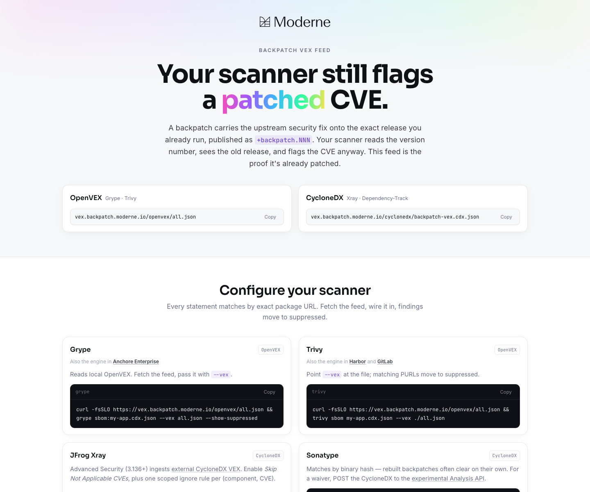

Feeds
Version strings in the examples are illustrative. Java release identifiers follow REL-003-JAVA.
OSERA patch consumers should be able to discover patch availability and vulnerability status through common, tool-friendly feeds.
OSERA-SP-0.1.0 requires patch providers to contribute data in both:
- OpenVEX, for scanner-friendly vulnerability statements.
- CycloneDX, for SBOM and vulnerability-management ecosystems.
Short-term feed hosting may use existing provider infrastructure with a FINOS CNAME. Longer term, feed JSON should be relocatable to OSERA-controlled infrastructure so recipients are not bound to a single provider endpoint.
OpenVEX page example
A provider-hosted VEX page is a useful working example for OSERA feed design. The screenshot below is included as an illustrative reference only; this legacy proof-of-concept screenshot is illustrative only and does not establish pack conformance.

As observed on July 10, 2026, the reference example published:
| Format | URL | Observed shape |
|---|---|---|
| OpenVEX | Provider-hosted OpenVEX JSON | OpenVEX v0.2.0, 93 statements, status: fixed statements keyed to exact package URLs |
| CycloneDX | Provider-hosted CycloneDX JSON | CycloneDX 1.6, 84 components, 118 vulnerabilities, vulnerability analysis using resolved_with_pedigree |
The example site explains the core consumption problem clearly: scanners may still flag a CVE because they see the old upstream version, while the patch coordinate carries the upstream security fix on that same baseline. The VEX feed supplies machine-readable evidence that the specific patched artifact is fixed.
REL-003 defines the generic patch naming outcome and default form where no concrete ecosystem profile exists. Java release versions follow REL-003-JAVA, which defines the Java pattern. Feeds should preserve the exact published release identifier. Existing +backpatch.NNN releases should be treated as legacy/proof-of-concept evidence unless the standards group explicitly ratifies them for a pack.
Feed expectations
Each patched artifact should be traceable to:
- the upstream project and OSERA fork;
- the vulnerable coordinate or component identity;
- the patched coordinate and version;
- the affected vulnerability identifier;
- the patch release, source branch, and baseline tag;
- the patch basis, including whether the change backports an upstream fix or uses provider judgement because no upstream fix exists.
Scanner consumption examples
The reference example provides concrete scanner patterns that OSERA can adapt:
Grype and Trivy
Grype and Trivy can consume local OpenVEX input.
curl -fsSLO https://vex.example.org/openvex/all.json
grype sbom:my-app.cdx.json --vex all.json --show-suppressed
trivy sbom my-app.cdx.json --vex ./all.json
JFrog Xray and Dependency-Track
JFrog Xray and OWASP Dependency-Track can consume CycloneDX VEX data.
curl -fsSLO https://vex.example.org/cyclonedx/patch-vex.cdx.json
Dependency-Track can receive the VEX document per project:
curl -X POST https://dtrack.example.com/api/v1/vex \
-H "X-Api-Key: $DT_API_KEY" \
-F "project=$PROJECT_UUID" \
-F "vex=@patch-vex.cdx.json"
Sonatype
The reference example notes that rebuilt patches may clear by binary hash, and that waiver workflows can post CycloneDX VEX to Sonatype’s experimental analysis API.
Statement anatomy
An OpenVEX patch statement should include:
- the CVE and aliases, including GHSA aliases where available;
- exact patched package URLs using the applicable ecosystem profile; Java examples use CARE-style OSERA versions such as
1.0.0.1-osera-00001; - hashes for built artifacts when available;
status: fixed;- an action statement describing that the CVE was fixed by backporting the upstream fix onto the baseline.
A CycloneDX patch statement should include vulnerability analysis and component pedigree so recipients can follow the evidence chain to the fix commit or equivalent source.
Sample OpenVEX statement
{
"@context": "https://openvex.dev/ns/v0.2.0",
"@id": "https://vex.example.org/openvex/all.json",
"author": "Example OSERA Patch Provider <security@example.org>",
"timestamp": "2026-07-10T00:00:00Z",
"version": 1,
"statements": [
{
"vulnerability": {
"name": "CVE-2026-0001",
"aliases": ["GHSA-example-example-example"]
},
"products": [
{
"@id": "pkg:maven/org.example/example-lib@1.0.0.1-osera-00001",
"identifiers": {
"purl": "pkg:maven/org.example/example-lib@1.0.0.1-osera-00001"
},
"hashes": {
"sha-256": "..."
}
}
],
"status": "fixed",
"action_statement": "CVE-2026-0001 fixed by backporting the upstream fix onto the 1.0.0 baseline."
}
]
}
Verification examples
Feed consumers and maintainers should be able to verify feed freshness and coverage.
curl -fsS https://vex.example.org/openvex/all.json | jq '.statements | length'
grype my-app.cdx.json --vex all.json --show-suppressed